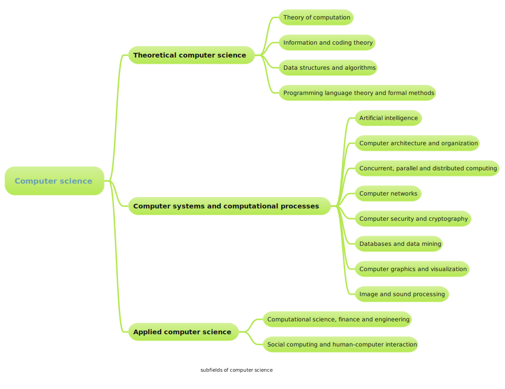

Welcome the world of computer science
1.What is computer science
Computer Science is no more about computers than astronomy is about telescopes. — E. W. Dijkstra
Computer science is a very huge and complex subject which consists a lot of non-trival subfields.
A tree-like mindmap of computer science 
You can click Computer science Introduction to see the details.
2.Useful materials for beginners
I'm not familar with the most subfields of CS. So I just selected some resources for beginners to learn CS.
1) Introductory Books
Below are the books that covered many fields of CS. And more importantly,those books are friendly to beginners.

-
SICP (Structure and Interpretation of Computer Programs)
PS:Some exercises are a little difficult.
-
CSAPP (Computer Systems: A Programmer's Perspective Randal E. Bryant and David R. O'Hallaron, Carnegie Mellon University )
2) Mathematics for Computer Science
I only list few books that I have read.
高等数学,概率论之类等工科必修课就不列举了
-
Introductory Combinatorics by Richard A.Brualdi
《组合数学》第五版
-
Linear Algebra Done Right by Sheldon Axler
-
Concrete Mathematics by Ronald L. Graham/Donald E. Knuth/Oren Patashnik
An interesting Math book
3) Programming Languages
We have to admit that being equiped with good coding skill is necessary for CS students.
There are various programming languages, here I just list the basic learning material for C,Python,Java and C++.
C
-
The C Programming Language by Ritchie & Kernighan wikipedia introduction
(You can found the PDF version online)
There are other good C programming books like "C Traps and Pitfalls(C陷阱与缺陷)","Pointers on C(C和指针)) and "c primer plus". But I think K&R C is good enough for beginners.
Python
-
Python is even easier than C.You just need to follow the toturial in Python documentation.
Java
-
Core Java (Java 核心技术)
C++
(I have to admit that Cpp is probably the most difficult Programming language to master.)
-
C++ Primer
中文版书评
4) Data Structures and Algorithms Analysis
-
CLRS (Introduction to Algorithms/算法导论) by Thomas H.Cormen/Charles E.Leiserson/Ronald L.Rivest/Clifford Stein
-
Algorithms, 4th Edition by Robert Sedgewick and Kevin Wayne
5) Web technologies
3. Others resources
Courses
Programming & Problem solving websites